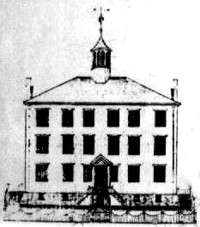

By definition, the term "early Albany jail" refers to the places where prisoners were kept before the building of the "new Jail" sometime after the War for Independence.
In the beginning, our exposition on the subject is compiled from references to the jail that currently appear on this website.
First, we have found no law, ordinance, or any set of rules governing criminal justice in the early Albany record. From the beginning of community life on the site of Albany, most offenders were not punished by imprisonment. We know from court and city records and from the "laws and ordinances" published in 1773 that they were fined and sometimes chastized by the public whipper.
Until the end of the eighteenth century, the so-called jail (or gaol) seems to have been in the city hall. The first city hall was a conventional building located on Court Street. It served as the municipal government, the court, clerk's office, and as the jail from before the establishment of city government in 1686 until the new city hall was erected during the 1740s.
The jail was operated by the sheriff (who served both city and county). A jailer answered to the sheriff and presumably was paid from the fees collected by the sheriff.
Working around the absence of actual sheriffs' or jail records, during the second half of the eighteenth century civil and criminal prisoners were held in the jail. During the Seven Years War, some military prisoners were held there. During the War for Independence, some military and Tory prisoners were held at the then old fort. Sick and disabled prisoners were held at the hospital. In 1776, skipper and alderman Gysbert G. Marselis was charged with repairing the jail and supervising the jailors.
During the war years, a large number of diversely deviant individuals were confined in the Albany jails in all locations. Among them was Ann Lee - founder of the Shakers who tried to dissuade other prisoners from taking up arms.
By the end of the war for Independence, it was clear that the now booming city of Albany and its growing hinterland were in need of more substantial and separate accommodations for law breakers.
In 1785, carpenter and nearby Albany resident Hendrick Van Wie was identified as the jailor.
By the 1790s, a new jail or "prison" had been build on upper State Street and Maiden Lane near the new Public Square. In 1800, the census returns for the second ward showed that James Lightbody was the jailor and eighteen men, a woman, and four slaves were incarcerated. Although its construction was authorized by the State legislature, it is unclear whether, at that time, the jail was under municipal or State jurisdiction.
After 1800, New Englander Nathan Hawley relocated from Rensselaersville to serve as jailor. His family was said to have lived in rooms in the rear of the new jail. His wife ran an inn there at 71 Maiden Lane. Hawley died in 1810.
In 1834, a more permanent municipal jail was built along what became Eagle Street at the Howard Street.
The Albany penitentiary was built largely by prisoner labor and opened as a prison in 1846.
Today, the Albany County Correctional Facility (built in 1931) is under the jurisdiction of the sheriff's office and sits on land near the Albany Airport and the site of the original Shaker settlement.
For openers, this essay has been compiled from available information.
Detail showing the "new jail" as drawn on the map of Albany made during the 1790s by Simeon De Witt.
First posted 1/30/07; revised 2/24/11